Capacitor circuits¶
Overview¶
In this lesson, we introduce the capacitor, another circuit element. Capacitors allow one to store electric charge for later use in applications. In fact, this was the first such device to be specifically discovered and studied for its electrical properties. Up to the mid-18th century, the only source of electric charge was by using a source of static electricity, such as that accumulated by a rotating glass globe, with a woolen cloth rubbed against it as it turned (known as an electrostatic generator). However, this charge could not be stored, but immediately flowed through any objects connected to it.
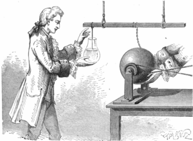
In the 1740’s, a few scientists had developed a mechanism for storing static electricity for long periods of time. Since the most famous of these was developed in Leyden, in the Netherlands, it became known as the Leyden jar. A jar filled with water had a metal wire draped inside, and electric current from an electrostatic generator was used to charge it up. The caption going along with the artist’s rendition above says it all:
In 1746, Andreas Cunaeus, an assistant in the laboratory of Pieter von Muschenbroek in Leyden, attempts to “condense” electricity in a glass of water. The rotating glass sphere (right) is an electrostatic machine. The static electricity generated by the hands rubbing on it is transferred through the chain to the suspended metal bar, and from it via the hanging wire into the glass of water. The glass acted as a capacitor, and a large charge built up in the water, and an equal charge of the opposite polarity built up in Cunaeus’ hand holding the glass. When Cunaeus reached up to pull the wire out of the water, he got a severe shock, much worse than an electrostatic machine could give, because the amount of charge stored was much larger than the terminal of an electrostatic machine could store. Cunaeus took two days to recover. Musschenbroek was also impressed by the powerful shock he received from the device, writing, “I would not take a second shock for the crown of France”. Reports of the experiment were widely circulated, and scientists began to investigate the charge storage ability of these “Leyden flasks”. Eventually the water was replaced by foil coatings on the inside and outside of the jar to store the charge.
Today, the basic idea of a Leyden jar or condenser (what we now call a capacitor) is now used for a variety of purposes in energy storage and electric circuits, and can be found in many electronic devices. This is why electronic equipment has a warning not to remove or try to repair the equipment unless you are a trained electrician, even if the electronic device is no longer plugged it – there are usually many capacitors in the device, still storing sizeable charges. If you accidentally touched one, you would get the same kind og shock as poor Cunaeus did!
Here are the objectives for this lesson:
Define a capacitor.
Define capacitance, and identify its units.
Given a capacitor circuit, calculate the charge on, the voltage across, and the energy stored on, each capactor.
State the properties of a charging or discharging capacitor.
Given an RC circuit, calculate the electrical properties of circuit elements as a function of time.
Capacitors¶
As stated above, the primary function of a capacitor is as a device that stores electric charge. A simple capacitor design is to have two metal plates which have no electric contact between them, but have contacts allowing it to be wired to other electric devices. Because of this, the symbol for a capacitor is made of two equal lines – don’t confuse this with the unequal lines of a battery symbol.
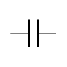
If connected to a battery, the battery will move electric charge from one plate onto the other. This means that each plate now has a finite amount of charge on it. If the battery is removed, this charge will be stored on the capacitor. Reconnecting the contacts together into a circuit allows the capacitor to drain its charge quickly. Thus, you can think of a capacitor much like the water reservoir behind a dam, or the water stored in a water tower. This water is stored for later use, and can be released by opening a valve.
The real charge on a capacitor: If you think about the process outlined before, you will note that the total charge on the capacitor always stays zero! Whenever we refer to the charge \(Q\), we are talking about the charge on a single plate. This is usually given as just a magnitude, since one plate will have charge \(+Q\), the other \(-Q\).
Remember that the resistance was defined in terms of how much current passes through a resistor, given a certain voltage across the element. The capacitance of a capacitor is defined in a similar manner. Now, however, it relates how much charge is stored on each plate, given a voltage difference across the plates.
Quantity: capacitance
Symbol: \(C\)
Units: farads (F) = coulombs/volt
Definition: $\( C = \frac{Q}{V} \)\( where \)Q\( is the amount of charge on *one* plate of the capacitor, and \)V$ is the voltage difference between the two plates.
You may be a little confused at this point, asking yourself what is the difference between a battery and a capacitor. After all, both store and release charge. However, a battery will release this charge over a very long period of time (hours or days). A capacitor is built to release the charge very quickly – we will talk about this below, when we discuss RC circuits. This is why capacitors are used in applications such as defibrillators and camera flashes.
Storing charge on a capacitor requires energy, so it is natural to ask how much electrical energy is kept in the capacitor as well. Remember that electric potential energy \(U_{elec}\) is related to voltage \(V\) by \(\Delta U = q \Delta V\). Now, imagine the electrons placed on the capacitor, one at a time. The very first electron requires basically no energy, since the voltage is essentially zero (from \(V = Q/C\) above). Adding every next electron needs a little more energy, though, since the voltage increases with the charge.
Put in graph terms, suppose we graph the charge on the capacitor as a function of the voltage across it. This gives the figure below.
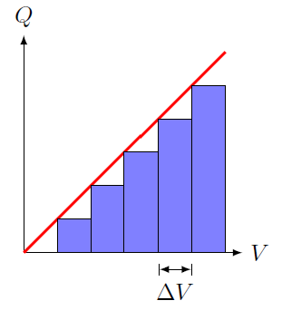
The slope of the graph is constant, since it is just the capacitance \(C\). The area of each of the rectangles is equal to \(q \Delta V\), i.e. the amount of each necessary to put an additional anount of charge on the capacitor plates. These rectangles obviously get larger, as more energy is required to place more charge, when there is already a lot of charge present on the plates. Thus, if we take the limit \(\Delta V \to 0\), we can see that the total area under the curve is equal to the energy \(U\) needed to charge the capacitor up to a given charge \(Q = CV\) by a voltage \(V\). Since this is just a triangle, then this gives
If we use the definition of capacitance above, we can write this in two other, equivalent forms:
This is reminiscient of when we started with the equation \(P = IV\) for power emitted by an electric device, and used Ohm’s law to get other forms of the relation.
Problem: An automatic external defibrillator (AED) delivers 125 J of energy at a voltage of 1.05 kV. What is the capacitance of this device? Answer: 227 \(\mu\)F
Capacitor circuits¶
Equivalent capacitance¶
Much of the material here is similar to what we did with resistor circuits, so I will not spend as much verbiage explaining ideas we have seen before. As before, you will need to group capacitors together into series or parallel groups, then continue the process until you have a single equivalent capacitor and a battery. Once this is done, you can use the definition of capacitance to calculate all properies of this equivalent capacitor, then “unpack” your series and parallel groupings to do the same for the other physical capacitors.
There will be two differences with what we have done before, though. The first is in what kind of table you will use to record your calculations. Obviously, resistance is now replaced with capacitance. In addition, charge on the capacitor is used instead of current through the resistor, and energy stored versus power emitted. This leads to the use of a QVCU table, for charge, voltage, capacitance, and energy stored. I will work through an example of this later in this lesson.
The second difference is that the series and parallel equivalent capacitances are “backwards” from their equivalent resistance counterparts. In other words, the series equivalent capacitance is the reciprocal of the sum of the reciprocal, much like the parallel equivalent resistance. Similarly, the parallel equivalent capacitance is the sum of the individual capacitances, as was the series equivalent resistance. The reason for this is the following. If we compare Ohm’s law with the definition of capacitance,
notice that the position of voltage in the capacitance equation is “flipped” from the resistance – i.e. now in the denominator, rather than the numerator. The position of the “charge” quantity (\(I\) or \(Q\)) is also reversed. This is the reason why the equivalent capacitances are calculated differently than the equivalent resistances.
I will actually work through the parallel case first, since as we will see, it is more straightforward. Suppose we take a group of uncharged capacitors, and arrange them in parallel. We want to calculate what single equivalent capacitor we could replace this group with, and have the same electrical properties.
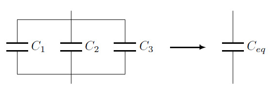
Using the loop rule, as we did with resistors, the voltage across any two of these parallel capacitors must be the same. Thus, \(V_1 = V_2 = \cdots = V\). By conservation of charge, the charges on the individual capacitors adds up to the total. If this were otherwise, then the equivalent capacitor would have a different charge than the group, giving it different electrical properties. Thus, \(Q = Q_1 + Q_2 + \cdots\). Putting these together,
Using the fact that the voltages are the same, we can divide by that voltage to get the equivalent capacitance for parallel capacitors.
Parallel equivalent capacitance:
\[ C_{eq} = C_1 + C_2 + \cdots \]
Now, let’s turn to the case of series capacitors. One key part is that we must assume that the capacitors all have zero charge to begin with. I will come back to this point later.
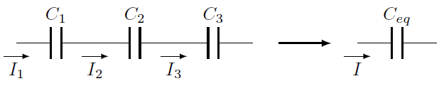
Using the junction rule, the capacitors all have the same current, since there are no junctions in a series group. I have put the current arrows in a different place here than I did with the resistors, to emphasize the point that the currents are what change the charge on each of the capacitors. If these capacitors are initially uncharged, for example, then the currents provide the charge on the capacitor plates. Now, since the capacitors are in series, then the charge on the left plate of \(C_2\) is coming from the right plate of \(C_1\), and so on down the line. Because the capacitors start with the same charge, the fact that they are in series means they will continue to have the same charge as well, although this charge is now larger than before. This gives \(Q = Q_1 = Q_2 = \cdots\).
In addition, the voltages must add up to the total, by energy conservation, so \(V = V_1 + V_2 + \cdots\). Using this fact, we have
Factoring out the equal charges, we get the equation for equivalent capacitance when the capacitors are in parallel.
Series equivalent capacitance:
\[ \frac{1}{C_{eq}} = \frac{1}{C_1} + \frac{1}{C_2} + \cdots \]
It is important to note that we used all initially uncharged capacitors. If some or all were charged, then the derivation above would not be true! In particular, we couldn’t say that, because the currents are the same, then all of the charge from one plate is due to being pulled off the plate from an adjacent capacitor. We would have to think about conserving the total charge and energy of the system. This is why I will usually assume the capacitors are initially uncharged, unless I say so explicitly.
Challenge: Suppose you take an uncharged \(C_1 = 45.0 \ \mu\)F capacitor, and place it in the circuit shown below with a \(C_2 = 15.0 \ \mu\)F capacitor with \(Q_2 = 30.0 \ \mu\)C of charge on it. When the switch is closed what will happen in the circuit? What are the final charges on the two capacitors? Answers: \(Q_{1, f} = 22.5 \ \mu\)C, \(Q_{2, f} = 7.50 \ \mu\)C.
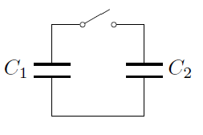
An example: hybrid capacitor circuit¶
I have found that, by this point, students are fairly comfortable making the change from resistor circuits to capacitor circuits. So, to avoid being excessive, I will go through an example of a hybrid capacitor circuit, and merely point out some of the things you need to watch out for. Many of the steps will be the same as before – write down a description of the circuit, group capacitors together in series or parallel, and continue this simplification until you get to a single equivalent capacitor. The only difference is that we will use the capacitor equations instead of those for resistors.
To keep things simple, let’s take the same circuit we used for an example with resistors, just change them to capacitors. I will use values \(C_1 = 3.14 \ \mu\)F, \(C_2 = 1.59 \ \mu\)F, \(C_3 = 2.65 \ \mu\)F, \(C_4 = 3.58 \ \mu\)F, and \(V = 9.79\) V.
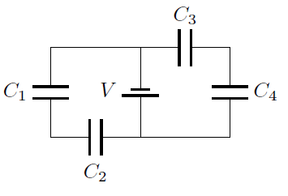
If you wish, you can redraw the circuit as shown below.
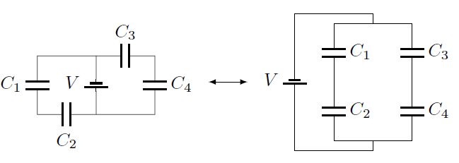
As before, the capacitors \(C_1\) and \(C_2\) are in series, and \(C_3\) and \(C_4\) are in series as well. The two groups \(C_{12}\) and \(C_{34}\) are in parallel. So first, let’s group \(C_1\) and \(C_2\) together in series.
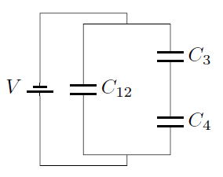
Along with this simplification, we write down the corresponding QVCU table.
Series |
Q (\(\mu\)C) |
V (V) |
C (\(\mu\)F) |
U(\(\mu\)F) |
|---|---|---|---|---|
\(C_1\) |
3.140 |
|||
\(C_2\) |
1.590 |
|||
\(C_{12}\) |
1.056 |
For series capacitors, the equivalent capacitance is less than the original capacitances – remember to check!
Notice that I have played a bit of a game with the units! The capacitances are in microfarads, not farads. This factor of “micro” will come along for the ride when calculating the other quantities in the table. However, this means that the voltages stay in volts. To see this in action, let’s write out a calculation we will see later in this example. If we have a \(2.579 \ \mu\)F capacitor with a voltage of 9.79 V across it, then its charge is
As long as I only have one of the units with a prefix, then multiplying it by a unit without one will give the answer with the same prefix. The ratio of two numbers, both with the same prefix, will cancel out the prefix in the final number – just think about reversing the calculation above to find the voltage, given the charge and capacitance.
For the second simplification, I put together \(C_3\) and \(C_4\) in series as well.
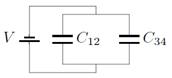
Series |
Q (\(\mu\)C) |
V (V) |
C (\(\mu\)F) |
U(\(\mu\)F) |
|---|---|---|---|---|
\(C_3\) |
2.650 |
|||
\(C_4\) |
3.580 |
|||
\(C_{34}\) |
1.523 |
The final simplification is to put the groups \(C_{12}\) and \(C_{34}\) together in parallel.
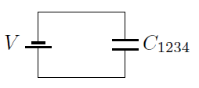
Series |
Q (\(\mu\)C) |
V (V) |
C (\(\mu\)F) |
U(\(\mu\)F) |
|---|---|---|---|---|
\(C_{12}\) |
1.056 |
|||
\(C_{34}\) |
1.523 |
|||
\(C_{1234}\) |
9.790 |
2.579 |
Again, as with resistor circuits, this is the table where we can put the battery voltage, because now the equivalent capacitor \(C_{1234}\) is along in the circuit with the battery. By the loop rule, this means \(C_{1234}\) has the same voltage as the battery.
We can now use the capacitor equations \(C = Q/V\) and the energy equation to complete the table. Here are two things I always mess up:
Put the voltage in the second column, not the first.
The energy equation has a factor of one-half in it. Personally, I use \(U = (1/2)QV\), since I find it easier to multiply the first two columns to find \(U\). You may find another energy equation more useful, so stick with it.
Filling out the table, I get
Parallel |
Q (\(\mu\)C) |
V (V) |
C (\(\mu\)F) |
U(\(\mu\)F) |
|---|---|---|---|---|
\(C_{12}\) |
10.34 |
9.790 |
1.056 |
50.61 |
\(C_{34}\) |
14.91 |
9.790 |
1.523 |
72.98 |
\(C_{1234}\) |
25.25 |
9.790 |
2.579 |
123.6 |
To double-check the table, the charges add up to the total, as do the energies up to four sig figs. Going back one table, the \(C_{34}\) grouping table is
Series |
Q (\(\mu\)C) |
V (V) |
C (\(\mu\)F) |
U(\(\mu\)F) |
|---|---|---|---|---|
\(C_3\) |
14.91 |
5.626 |
2.650 |
41.94 |
\(C_4\) |
14.91 |
4.165 |
3.580 |
31.05 |
\(C_{34}\) |
14.91 |
9.790 |
1.523 |
72.98 |
The voltages and the energies add up to the total, within three sig figs. Finally, for the \(C_{12}\) table,
Series |
Q (\(\mu\)C) |
V (V) |
C (\(\mu\)F) |
U(\(\mu\)F) |
|---|---|---|---|---|
\(C_1\) |
10.34 |
3.293 |
3.140 |
17.02 |
\(C_2\) |
10.34 |
6.503 |
1.590 |
33.62 |
\(C_{12}\) |
10.34 |
9.790 |
1.056 |
50.61 |
The sum of the voltages is off on the third sig fig, but the energies add up to the total for three sig figs, so I count it as a win.
Problem: Construct the appropriate QVCU table for the circuit shown below, with \(C_1 = 2.50 \ \mu\)F, \(C_2 = 1.50 \ \mu\)F, \(C_3 = 3.50 \ \mu\)F, and \(V = 24.0\) V.
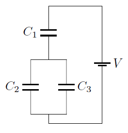
Problem: You are given the following incomplete QVCU tables for three capacitors \(C_K, C_L,\) and \(C_M\), for the circuit shown in the figure below. Fill in the rest of the tables, to four sig figs.
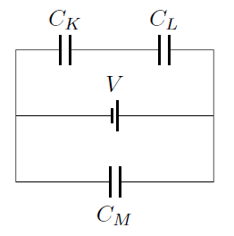
?
Q (\(\mu\)C)
V (V)
C (\(\mu\)F)
U(\(\mu\)J)
\(C_K\)
8.000
\(C_L\)
3.000
\(C_{KL}\)
?
Q (\(\mu\)C)
V (V)
C (\(\mu\)F)
U(\(\mu\)J)
\(C_{KL}\)
\(C_M\)
15.00
\(C_{KLM}\)
45.00
Discharging RC circuits¶
The next natural question is to ask what happens when you put resistors and capacitors into the same circuit; these types of circuits are known as RC circuits. This may seem a little contrived to you. But remember that every real wire or other electrical connection will always have at least some resistance. So, if even there is not “officially” a resistor in a circuit with a capacitor, anything with a capacitor in it will actually be affected by the resistance of the circuit connections.
That being said, there are good reasons to create RC circuits for applications. We will see that, by picking the right resistance and capacitance, the RC circuit will have a natural length of time for doing what it does. Thus, RC circuits are often used when a particular timing is desired. Some examples are intermittent windshield wipers and artificial pacemakers used in human hearts. Resistors and capacitors can also be used in combination to reduce the noise in an electrical system; these are known as “high-pass” and “low-pass” filters, depending on whether they only keep high frequency or low frequency noise, respectively.
For the rest of this lesson, we will use Kirchhoff’s laws to analyze circuits with a resistor and a capacitor. The properties of these circuits depend on whether there is a battery present; if there is, then it will act to charge the capacitor. The first case I examine, then, is when there is no battery, but the capacitor starts with an initial charge. Later on, I will look at the case when the capacitor is initially uncharged, but a battery is present in the circuit.
Using the loop rule¶
Suppose we have the following circuit, with a capacitor \(C\) with an initial charge \(Q_0\), and a resistor \(R\). This will form a discharging RC circuit. The only way a capacitor can discharge is if there is no battery putting charge on it! The capacitor acts as the source of current, with the flow of charge caused by the energy stored in the capacitor. As the capacitor discharges, it has less charge and less energy, until it is essentially discharged.
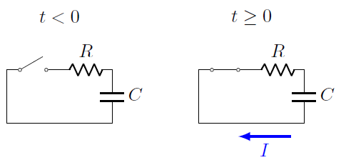
The current is assumed to flow in the clockwise direction. This is equivalent to saying that it is the “bottom” plate of the capacitor that is the positive plate. Since (conventional) current is the flow of positive charge, a discharging capacitor will lose charge off its positive plate by current flowing away from it, and going onto the negative (top) plate. If this is a bit confusing, just remember we can get the same thing by thinking in terms of electron flow: electrons will leave the negative plate, flow in a counterclockwise direction around the circuit, and deposit onto the positive charge, reducing its total charge. Electron flow is always in the opposite direction to conventional current, so it all works out.
Using Kirchhoff’s loop rule, moving counterclockwise around the circuit, we have
Here, I have used the voltage difference for a capacitor, as well as Ohm’s law as usual. Remember, though, that current is the flow of charge through the circuit. In particular, the current \(I\) here is the decrease in the charge \(Q\) on the capacitor per time interval \(\Delta t\). Thus, in this case,
Solving for the change in the capacitor charge \(Q\) with time gives
The discharging capacitor as a function of time¶
This is a good place to stop for a second, and notice some important aspects of this equation. First, since the units of \(Q\) must be the same on both sides, this means that the combination \(RC\) must have units of time. In a bit, we will see that \(RC\) actually determines the time for things to happen in the circuit; more on that later.
Next, notice that the change in \(Q\) depends on \(Q\) itself! This is an important class of equation, which we will see gives exponential change in the variable – here, the charge. However, the behavior of such equations is very similar, so the discharging RC circuit makes a good case study to learn about what happens in these cases.
Much like we have done with other evolution equations of this sort, this can be computed using a quick program. Let’s graph the value of the capacitor charge \(Q(t)\) as a function of time. First, we import the necessary modules for graphing.
from vpython import canvas, color, gcurve, graph
Let’s rewrite the equation above for the change in charge, so that it is in terms of initial and final charges. Since \(\Delta Q = Q_f - Q_i\), then the final equation above is equivalent to
The charge on the right-hand side of the equation is the charge at the beginning of the time interval \(\Delta t\), since we are using it to update the charge to its final value. Putting this evolution into a Python program gives us the cell below. For this example circuit, I have used \(125 \ \mu\)F for the capacitance, \(15.0 \ k\Omega\) for the resistance, and 1.50 mC for the initial charge. The time MAX_TIME that the program runs for is set as five times the value \(RC\).
canvas()
# Circuit parameters
C = 125e-6 # capacitance (F)
R = 15.0e3 # resistance (ohms)
Q0 = 1.50e-3 # initial cap charge (C)
Q = Q0
t = 0 # initial time (s)
DT = 0.001 # time step (s)
MAX_TIME = 5 * R * C # final time (s)
# Create charge graph
chargeGraph = graph(xmin = 0, xmax = MAX_TIME, xtitle = 't (s)', ymin = 0, ytitle = 'Q (C)')
chargeCurve = gcurve(graph = chargeGraph, color = color.red)
# Evolution loop
while t < MAX_TIME:
# Compute charge
Q = Q + (-Q/(R * C)) * DT
# Graph charge
chargeCurve.plot(t, Q)
# Update time
t = t + DT
Problem: Change the values of the capacitance \(C\), the resistance \(R\), and the initial charge \(Q_0\), but do not change the equation for
MAX_TIME. Run the cell again. Does the shape of the graph look any different? What changes about the graph?
Please make sure you try the programming in the last problem, because it reveals an important aspect of RC circuits that is unfortunately often confusing to students. What you should see is that the charge starts at its initial value, then falls exponentially down towards zero. Regardless of the choice of \(C, R\) or \(Q_0\), as long as MAX_TIME is \(5RC\), the curve will have exactly this same shape. However, it never actually reaches zero! Instead, the line \(Q = 0\) is a horizontal asymptote for the function; technically, the capacitor never fully discharges in a finite time. Yet, for all practical purposes, the capacitor is essentially discharged when \(t = 5RC\) or so.
This gets at the importance of this produce \(RC\), which we will refer to as the time constant of the circuit.
Quantity: time constant
Symbol: \(\tau\)
Definition: \(\tau = RC\)
Units: seconds
Although the absolute size of the charge \(Q(t)\) will change, based on the circuit parameters chosen, if you play around with the program, you will find that certain ratios stay exactly the same. For example, if you calculate the capacitor charge for the default values of the program when \(t = \tau\) (one time constant has passed after the capacitor started discharging), you will get \(Q(t = \tau) = 5.52 \times 10^{-4}\) C. Change the values and you will get a different answer. But regardless of the values chosen, you will always get the same value for the following ratio:
To see this directly, add the following code into the cell above inside the while loop.
if abs(t - R * C) <= DT:
print(t, Q / Q0)
Problem: Find the ratio \(Q(t) / Q_0\) for when the time is twice the time constant, i.e. when \(t = 2RC\). Change the circuit parameters to verify you always get the same value for the ratio. Answer: 0.135
Hopefully you are convinced by now that (1) all discharging RC circuits have the same behavior, and (2) the time scale for the discharge is set by the time constant. Let’s sum up the mathematics of the expoential first, then turn to the specific equations for this type of circuit.
Remember that the letter \(e\) denotes the number \(2.71828 \dots\), which is related to exponential growth. Here are some key facts we will use for RC circuits:
In general, the graph of \(e^{-x}\) starts at 1 and decreases down to zero; \(e^{-1} = 0.367879 \dots, e^{-2} = 0.135335 \dots\), so graphs of \(e^{-x}\) and \((1 - e^{-x})\) look like
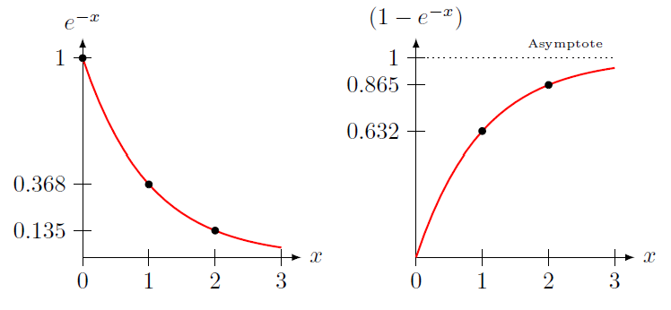
Equations for discharging RC circuits¶
We can actually solve the loop rule equation derived earlier to get an explicit equation for the charge. For a discharging RC circuit, the charge \(Q(t)\) on the capacitor as a function of time is given in terms of the initial charge \(Q_0\), the resistance \(R\) of the resistor, and the capacitance \(C\) of the capacitor as
We can relate this to the graph \(e^{-x}\) above, by seeing that the combination \(t/RC\) is unitless; this pure number will set where the charge of the capacitor is along the generic exponential graph given above. Hopefully you saw this universal behavior by playing around with the program above.
Problem: Change the program in the cell above, so that it graphs the voltage across the capacitor.
Dividing the charge equation by the capacitance gives the voltage across the capacitor for an RC circuit.
Problem: Change the program in the cell above, so that it graphs the current through the circuit.
The charge on the capacitor is decreasing, so there is less available to generate a current. In addition, as the capacitor charge goes down, so does the voltage across the capacitor, which provides the energy to move the current in the first place. Thus, for a discharging RC circuit, the current equation is the same as for a charging RC circuit:
Problem: A light bulb is connected to a charged capacitor, which is then allowed to discharge through the bulb. If the bulb acts like a resistor, with its brightness determined by the power emitted by the bulb, what behavior would the light bulb exhibit?
The bulb starts bright, then gradually gets dimmer.
The bulb starts dim, then gradually gets brighter.
The bulb maintains a constant brightness.
The bulb remains unlit.
Now let’s see how to use these equations to solve for unknown properties of the RC circuit. This example will serve to remind you of some mathematical properties of the exponential. A 20.0 \(\mu\)F capacitor has an initial charge of 2.40 mC when it is connected to a 120 \(\Omega\) resistor. How long does it take for the capacitor to have 75.0% of its initial charge? Note that we do not know what the value is of the final charge; indeed, as we will see, we don’t need to calculate it, either! Start with the charge equation above,
We want to solve for \(t\), so we first need to get it out of the exponential function. However, to undo this exponential, we first need it to be “by itself”, i.e. not multiplied or added to anything else. Thus, we have to divide first by the initial charge \(Q_0\) to get
Now we can take the natural logarithm of both sides, since \(\ln e^x = x\). After this is done, we have
If we multiply both sides by \(-RC\), then we have an equation for \(t\), which we can substitute into. Before that, though, there is one final thing we can do. We do not know what the final charge \(Q(t)\) is, just that it is 75.0% of the initial charge. In other words, we know
So we can substitute this ratio into the equation, and save ourself some work. You will see this a lot with RC circuits – if you do not have the individual values, but instead have the ratio, just use the ratio! Our final equation is now
Plugging in the numbers from above gives \(t = 0.287 RC = 690. \ \mu\)s.
Problem: A capacitor is connected to a 175 \(\Omega\) resistor. The capacitor initially had a charge of 125 mC. After the capacitor was attached to the resistor for 4.50 s, the capacitor had a charge of 45.0 mC. What is the value of the capacitor? Answer: 25.2 mF
Charging RC circuits¶
Now we can look at the second important case for an RC circuit. Suppose we have the following circuit, with an initially uncharged capacitor \(C\), a resistor \(R\), and a battery \(V\). When the switch is closed, the battery causes current to flow through the circuit.
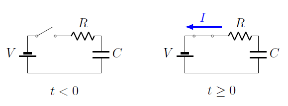
Using Kirchhoff’s loop rule, going around the circuit counterclockwise we have that
Here, I have used the voltage difference for a capacitor, as well as Ohm’s law as usual.
The high voltage side of the capacitor: When using the loop rule, you must know which side of the capacitor is the high voltage side, to get the correct sign in front of the \(Q/C\) term. The current is flowing in a counterclockwise direction, based on the positioning of the battery. Remember this is conventional current, so the electrons are flowing in the clockwise direction. Thus, the top plate is accumulating electrons, while electrons are pulled off the bottom plate, so it becomes more positive. This bottom plate will then be the high voltage side, since voltage increases from negative charge to positive.
Remember, though, that current is the flow of charge through the circuit, so that
Rearranging the equation, we have that the change in the capacitor’s charge per time is
From this equation, we can confirm the intuition I stated earlier. When the capacitor is initially uncharged, the second term on the right-hand side of this equation is zero. Thus, the current flow is simply \(I = V/R\), just as if the capacitor was a wire. However, as the charge increases, this second term gets bigger and bigger – the current flow gets smaller as the capacitor charges up. Eventually, when \(Q = CV\), the two terms are equal, and the current is zero. However, as we will now see, this actually takes an infinite time to happen!
canvas()
# Circuit parameters
C = 125e-6 # capacitance (F)
R = 15.0e3 # resistance (ohms)
V = 12.0 # battery voltage (V)
Q = 0 # initial cap charge (C)
t = 0 # initial time (s)
DT = 0.01 # time step (s)
MAX_TIME = 4 * R * C # final time (s)
# Create charge graph
chargeGraph = graph(xmin = 0, xmax = MAX_TIME, xtitle = 't (s)', ymin = 0, ytitle = 'Q (C)')
chargeCurve = gcurve(graph = chargeGraph, color = color.red)
# Evolution loop
while t < MAX_TIME:
# Compute charge
Q = Q + (V/R - Q/(R * C)) * DT
# Graph charge
chargeCurve.plot(t, Q)
# Update time
t = t + DT
Problem: Change the values of the capacitance \(C\), the resistance \(R\), and the battery voltage \(V\), but do not change
MAX_TIME. Run the cell again. Does the shape of the graph look any different? What changes about the graph?
The equation above for the current through this charging RC circuit can be solved analytically for the charge \(Q(t)\) on the capacitor as a function of time \(t\). This gives
Problem: Change the program in the cell above, so that it graphs the voltage across the capacitor. Remember that \(V = Q/C\).
Using the equation for the charge \(Q(t)\), we can divide by the capacitance to get the voltage \(V(t)\) across the capacitor as a function of time:
Problem: Change the program in the cell above, so that it graphs the current through the circuit. Remember that \(I = \Delta Q / \Delta t\).
Finally, the current through the circuit is given by
Problem: An uncharged 10.0 \(\mu\)F capacitor is charged by a 10.0 V battery through a resistance \(R\). The capacitor reaches a potential difference of 4.00 V in 3.00 s after charging begins. Find \(R\). Answer: 587 k\(\Omega\)
Summary¶
We now have looked at our third circuit element, the capacitor. This is used as a way to store charge and then release it quickly. After understanding its properties, we then mirrored what we did earlier for resistors, and looked at capacitor circuits. The method of simplification was applied here, grouping capacitors in series or parallel repeatedly in order to reduce the circuit to a single equivalent capacitor. Finally, we looked at putting both a resistor and a capacitor into the same circuit, which lead to some interesting consequences!
After this lesson, you should be able to:
Completely analyze a given capacitor circuit, to calculate the charge on, the voltage across, and the energy stored, on each capacitor.
Find the charge on, the voltage across, or the current to, an initially uncharged or a discharging capacitor in an RC circuit.
Explain how these quantities change at the initial connection of the circuit (\(t = 0\)) and after a long time.